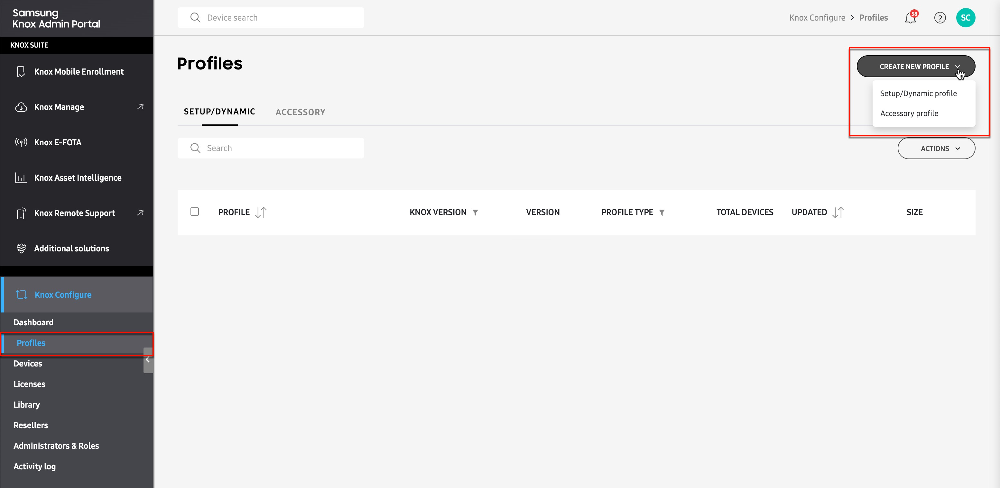
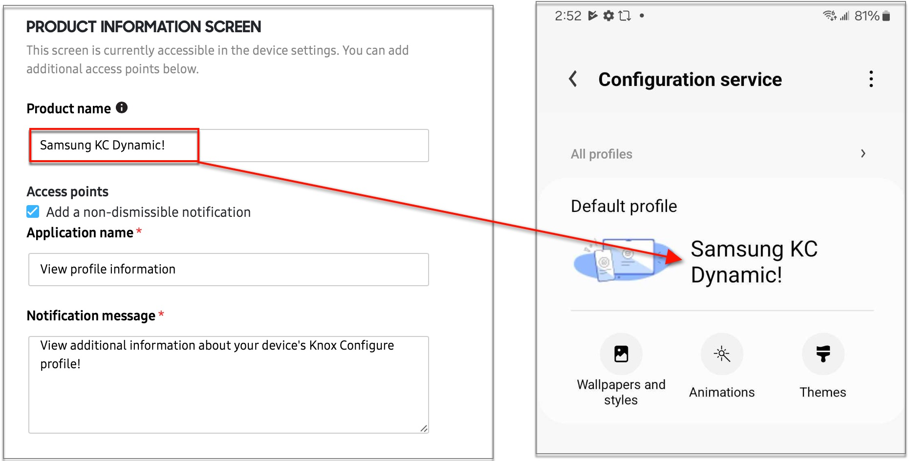
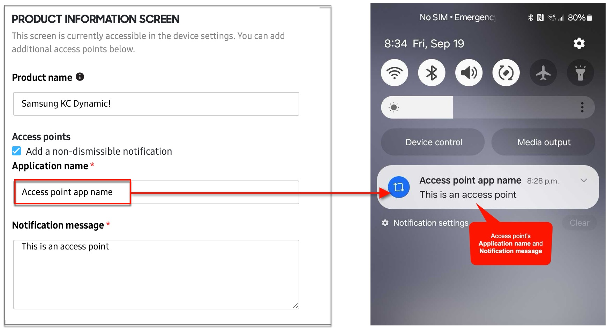

Create profiles
Last updated September 19th, 2025
A Knox Configure Profile is a collection of settings that allow you customize Samsung Galaxy devices with preset apps, content, and restrictions. As an IT admin, you can configure two types of profiles:
- Setup/Dynamic profiles that let you remotely customize Galaxy phones, tablets, and wearable devices during an Out-of-Box Experience (OOBE) setup.
- Accessory profiles that can be configured onto NFC-type accessories like Galaxy Buds cases, cards, and keychains.
The profile creation process is identical for both Setup/Dynamic and Accessory profiles. Both profile types open a profile creation page with identical menus, but with slightly different configuration options.
To create a profile:
-
Click Profiles in the left navigation menu on the Knox Configure console.
-
On the Profiles page, click CREATE PROFILE in the upper right corner, then select either Setup/Dynamic profile or Accessory profile. The profile wizard opens.

When using the profile wizard, settings are grouped into the following tabs:
Profile info tab
The Profile info tab is where you’ll name your profile and specify what type of device the profile will be used with.

On this tab, do the following:
-
Give your profile a unique Name (mandatory) and Description (optional).
-
Select the profile’s target device type.
- For Setup/Dynamic edition, you can create profiles that configure smartphones/tablets or wearable devices1.
- For Accessory edition, you can only create profiles that configure smartphones/tablets (after pairing with an NFC accessory)
-
If you are creating a profile for phones or tablets, you’ll need to select whether your target devices are Secured by Knox devices, or Other Samsung devices (not secured by Knox).
-
If target devices are secured by Knox, then you’ll need to specify their Knox version. By default, the latest Knox version (3.4 or above) is selected.
-
If target devices have a lower Knox version, select it from the list.
For Accessory edition profiles, your target devices must be Secured by Knox.
-
-
Click NEXT:CONFIGURATION MODE to save your basic information and move to the next tab.
Configuration mode tab
The Configuration mode tab is where you define the profile’s edition and the device’s intended operating mode.

On this tab, do the following:
-
Select the Knox Configure edition that you want to use (Setup edition, Dynamic edition, or Accessory edition).
-
For Dynamic edition profiles, you have the option to select your device operation mode:
-
Normal mode allows the device to run as a phone, tablet, or wearable as intended, but with specific apps, settings, and content applied. Users can add new apps and change settings after initial device configuration. Selecting this mode grants you access to all available profile configuration settings.
-
ProKiosk mode restricts device operation to a single application or group of applications, and limits unwanted device activity and usage. ProKiosk mode devices have fixed home screens and require passcodes to enter and exit the device. Selecting this mode grants you access to profile configuration settings unique to ProKiosk mode.
-
-
For Setup edition and Accessory edition profiles, you can only create Normal mode profiles.
- For Setup edition profiles only, you also have the option to uninstall the Knox Cloud agent after device configuration. This option removes the Configuration service app from the device after it is enrolled.
-
-
Once you’ve selected your edition and configuration mode, click NEXT: ENROLLMENT INFO to save your information and move to the next tab.
Enrollment Info tab
The Enrollment Info tab lets you customize the information that appears on your devices during enrollment, generate enrollment QR codes, and perform other actions like pre-confguring Wi-Fi settings and preventing users from cancelling enrollment. As you configure these settings, you can also preview your changes on the panel to the right.

The settings on this tab are grouped by the following sections:
Company information
Your company name appears on the device enrollment screen, and is mandatory for all profiles. Enter your Company name in the provided field, then optionally add your company information by selecting Add address.
Your company name and address is overwritten if you also add a custom Welcome screen message. You’ll still be required to provide a company name for profile creation, but this information won’t appear on the device during enrollment.
Support contact details
Your company’s support contact information appears on the enrollment screen and in the Configuration service app, giving your end users a point-of-contact when they encounter issues with their configured device. To add this information:
- Provide a Phone number and Email address. Note that these fields are mandatory for all profiles.
- Add an optional link to your company’s Website. This information only appears on the Configuration service screen after enrollment.
Product information screen
You can add a unique Product name that appears in the Configuration service app, configure a shortcut to the Configuration service app, and add custom backgrounds and logos to the device enrollment screens. In this section, do the following:
-
Enter a unique Product name to display in the Configuration service app. If left blank, the name of the profile is used by default.

-
Select Add a non-dismissible notification to add a persistent notification that appears in the device’s notification drawer. This notification takes the device user directly to the Configuration service screen. Customize the notification with your own Application name and Notification message.

-
Select Background fill to customize the enrollment screen’s background.
- Choose Select fill to add a solid background color in HEX format
- Choose Upload images to add up to five images to use as your enrollment screen backgrounds. During enrollment, the background images will cycle in the order that they were uploaded. Note that the combined size of all five images cannot exceed 2 MB in size.
-
Upload a Logo to show on the enrollment screen. The logo image cannot exceed 1 MB in size and should have a 1:1 aspect ration for an optimal fit.
Device enrollment
You can configure enrollment preferences, add custom welcome screens and additional terms & conditions, and generate enrollment QR codes. In this section, do the following:
-
Under Enrollment preferences, define the enrollment behavior by selecting one of the following options:
-
Run the Setup Wizard and prevent end users from canceling enrollment to launch the Knox Configure setup wizard during OOBE configuration, and prevent users from cancelling enrollment. This option is selected by default.
-
Allow end users to cancel enrollment to display a Cancel button on the lower left-hand side of the enrollment welcome screen, providing device users with an option to cancel Knox Configure enrollment.
-
Skip Setup Wizard and enable FRP Bypass to prevent the device from being locked to a personal Google account.
This is option is only available for select customers, with devices uploaded by a Samsung Knox reseller. If this feature is disabled, contact your local Samsung admin.
-
-
Under Welcome screen, optionally select any of the following:
- Skip welcome screen to bypass the welcome screen while enrolling the device.
- Customize the welcome screen text to add a message to the welcome screen. You can enter up to a 400 characters. You can preview the welcome screen text in the right pane.
- Hide support link to remove the support link from the welcome screen.
-
Under Agreements, optionally select any of the following:
-
Skip the Samsung Knox Privacy Policy to allow users to bypass the Knox privacy policy agreement during enrollment. This option is only available on devices that your company owns. If you are enrolling devices that are not company-owned, this option is not available.
-
Add Terms & Conditions and/or Privacy Policy to add a custom agreement screen on the device during enrollment. If you select this option, you must provide a Title and Body.
-
-
Under QR code for enrollment, you can generate a QR code that allows users to enroll their device using an OOBE gesture. To generate a QR code click ADD QR CODE.
-
By default, QR code enrollment is only enabled for devices uploaded by a reseller. You can bypass this by selecting Also allow QR code enrollment for devices not uploaded by a reseller. However, this will allow anyone with access to the QR code to enroll their device.
-
If you want the QR code to automatically configure a Wi-Fi network for the device, select Add Wi-Fi network configuration to QR code and add the network SSID Name, Security type, and Password (if applicable).
-
Next, you’ll need to select your Knox Configure license for this profile. If you currently have a trial license, the license name will appear in the list. If you have a commercial license key, you can enter it in the provided fields.
Once you’ve selected or entered your license, click NEXT: CONFIGURE SETTINGS to save your enrollment info and move to the next tab.
Configure settings tab

The Configure settings tab is where you customize your profile settings like apps, content, and restrictions. As profile configuration settings can vary between the different Knox Configure editions, this information is covered in greater detail on the Configure profile settings page. After you’ve customized your profile settings, click NEXT: SUMMARY to move to the next tab.
You can still create and save a profile without making any profile setting changes. When your devices enroll in Knox Configure, they will enroll without any customizations or settings applied.
Summary tab

On the Summary screen, you can review the details of your profile and see a preview of your end user’s enrollment screens. From here, you can click EDIT to jump to the respective tab and make changes. Once you’ve reviewed your profile, you can do the following:
Save your profile
Click SUBMIT to create your profile. On the following dialog, provide an optional comment, then click either:
- SUBMIT to create the profile without assigning it to devices (you can still assign profiles to devices later).
- ASSIGN DEVICES & SUBMIT to create your profile and select devices to assign to it. On the following page, you can select devices from the list, or use the search bar to find devices by name or Device ID or Custom ID. Once you select your device(s), click SELECT LICENSE.
- If you currently have an active trial or commercial license key, the license name will appear in the list.
- If you have a commercial license key, you can enter it by clicking ENTER LICENSE KEY.
- If you do not already have a trial license key, you can generate one by clicking GET A LICENSE.
- Click CANCEL to return to the Summary tab without saving.
More actions
Click MORE ACTIONS if you aren’t ready to create your profile. From the list, you can click:
- Download summary as PDF to view your profile configuration settings in an offline PDF document.
- Save as draft to save a draft copy of your profile.
You can also click SAVE AS DRAFT at any time after entering your Enrollment info.
-
Knox Configure supports Tizen OS wearable devices, up to Samsung Galaxy Watch 3. ↩︎
On this page
Is this page helpful?